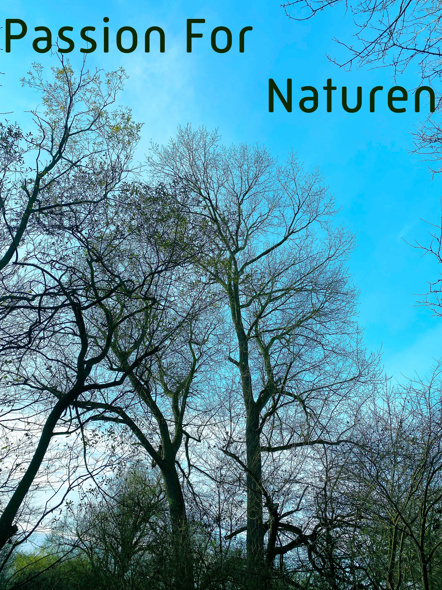

Passion For Naturen
Emma studerer Forest and Nature Management på Københavns Universitet og har derfor en stor passion for klima, miljø og natur, som hun fortæller om i denne 1 minuts video.

Emma studerer Forest and Nature Management på Københavns Universitet og har derfor en stor passion for klima, miljø og natur, som hun fortæller om i denne 1 minuts video.